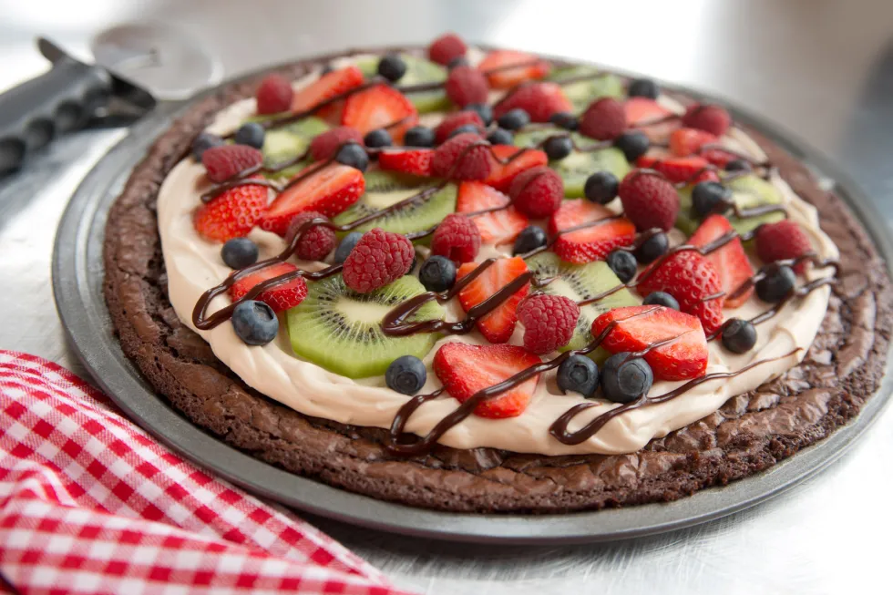

Fruit Brownies

Description
A delicious desert pizza made with rich bownie and real fruit
Ingredients
- Your Favorite Brownie mix
- 1 bar of cream cheese
- 1 jar of marshmellow fluff
- Assorted fruits(I prefer strawberries, green grapes, blueberries, and kiwi)
Steps
- Before starting this recipe leave your cream cheese out to soften for an hour or two
- Start by Preheating the stove to 350 and prepping the pan with oil
- Mix your brownie mix or make brownie from scratch if you prefer
- Once the oven is preheated, pour the batter into the pan and place the brownie in the oven for the time listed on the box
- While the brownie is in the oven now is a great time to rinse and prepare your fruit, I usually halve grapes, and cut the kiwi and stawberries into slices. smaller berries can remain whole
- Once your fruit is prepared, we should be close to removing the brownie from the oven. Once its removed lets combine our marshmellow fluff and cream cheese while the brownie cools. Make sure to mix until the cream cheese has no clumps left
- Once the brownie is cool enough it won't melt our frosting we can start appling the frosting, then cover it with our fruit!
Back to Home